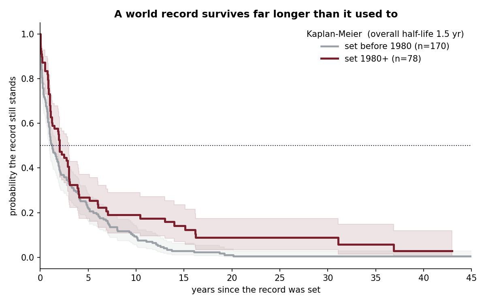

| 1 | Marathon | 2:00:35 | 2023 | 60% |
| 2 | High jump (W) | 2.10 m | 2024 | 59% |
| 3 | Shot put | 23.56 m | 2023 | 57% |
| 4 | 10,000 m | 26:11.00 | 2020 | 52% |
| 5 | 5000 m | 12:35.36 | 2020 | 51% |
| 6 | 800 m | 1:40.91 | 2012 | 44% |
| 7 | 100 m | 9.58 s | 2009 | 37% |
| 8 | 1500 m | 3:26.00 | 1998 | 25% |
| 9 | 800 m (W) | 1:53.28 | 1983 | 0% |
Model output as of the July 2026 run, from tables/current_record_vulnerability.csv. Men's events unless marked (W).
Records fall early, and modern ones less often
The Kaplan-Meier median reign is 1.5 years. Most of the risk comes right after a record is set, and records that get through the first few years flatten into a long tail. Split by era, the median is about 1.2 years for the 170 records set before 1980 and about 2.0 years for the 78 set since.

What makes a record last
- Era. A record set in 1980 or later has a Cox hazard ratio of 0.52 (p < 0.001): about half the yearly risk of being broken.
- Margin. Each percentage point by which a record beat the previous one multiplies the hazard by 0.65 (p = 0.0002). Big jumps, like Beamon's, last.
- Event type. Distance events come out at 0.78, which is not significant at the 5% level (p = 0.07).
The data had to pass a gate
Progressions come from Wikipedia's record-progression pages. Those pages mix the progression itself with all-time lists, so a naive scrape can silently drop decades. An event is kept only if its reconstructed running best is within 0.5% of the ratified record, its history reaches back to 1970 or earlier, and it has at least 12 marks. Nine of 21 candidate events passed.
The model sees when records fell; it knows nothing about how many athletes are close to them now. The 0% for the women's 800 m is partly mechanical: no reign in the data ends between 43 and 48 years, so the curve is flat there. The full writeup covers these limits and the Cox table.